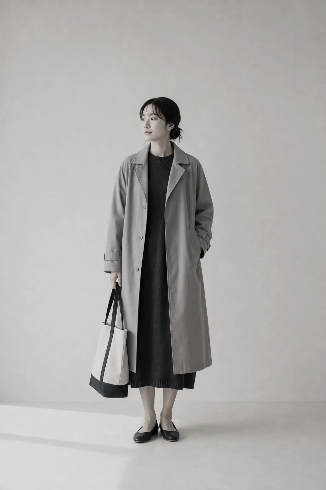
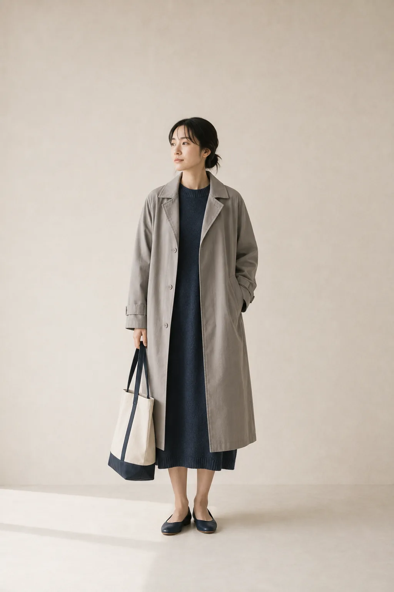
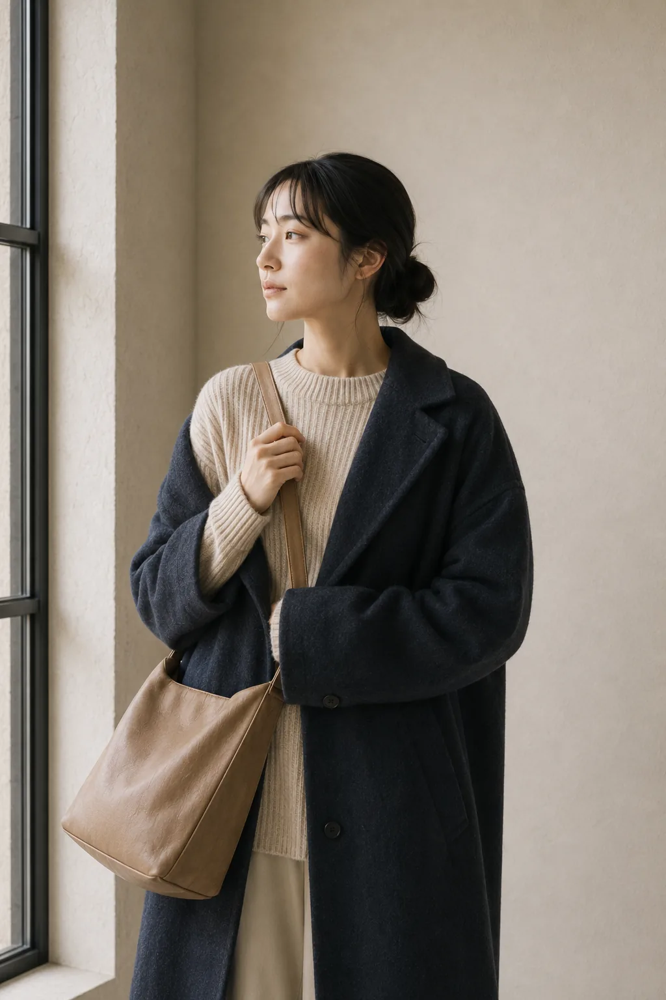
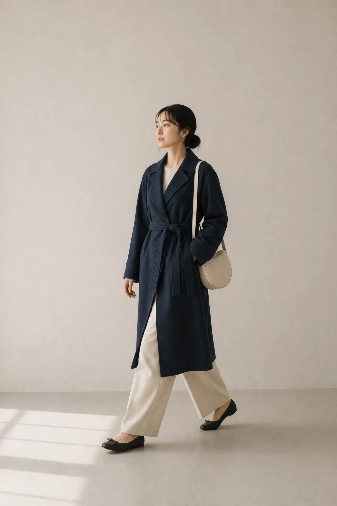
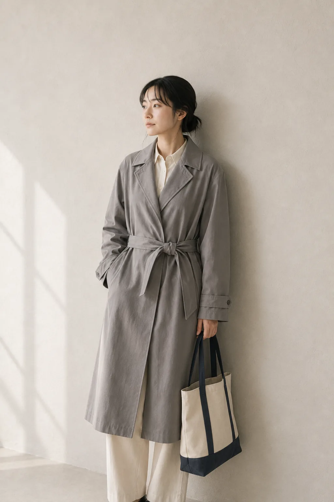
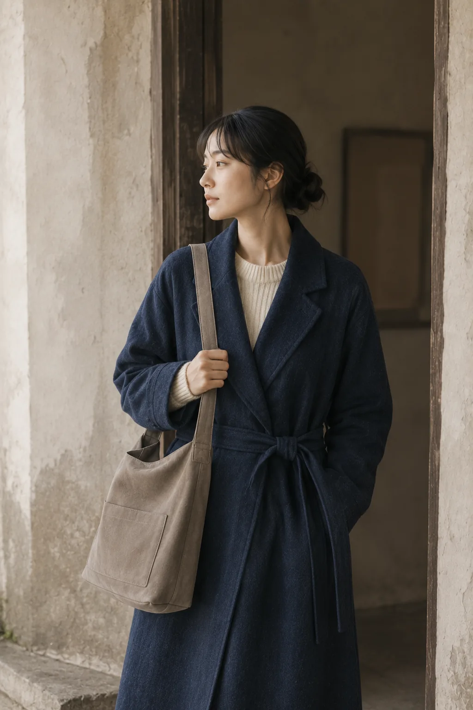
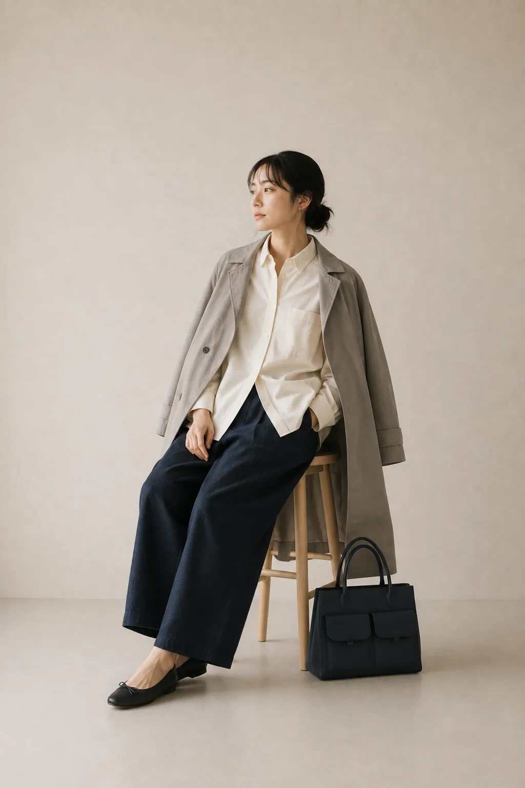
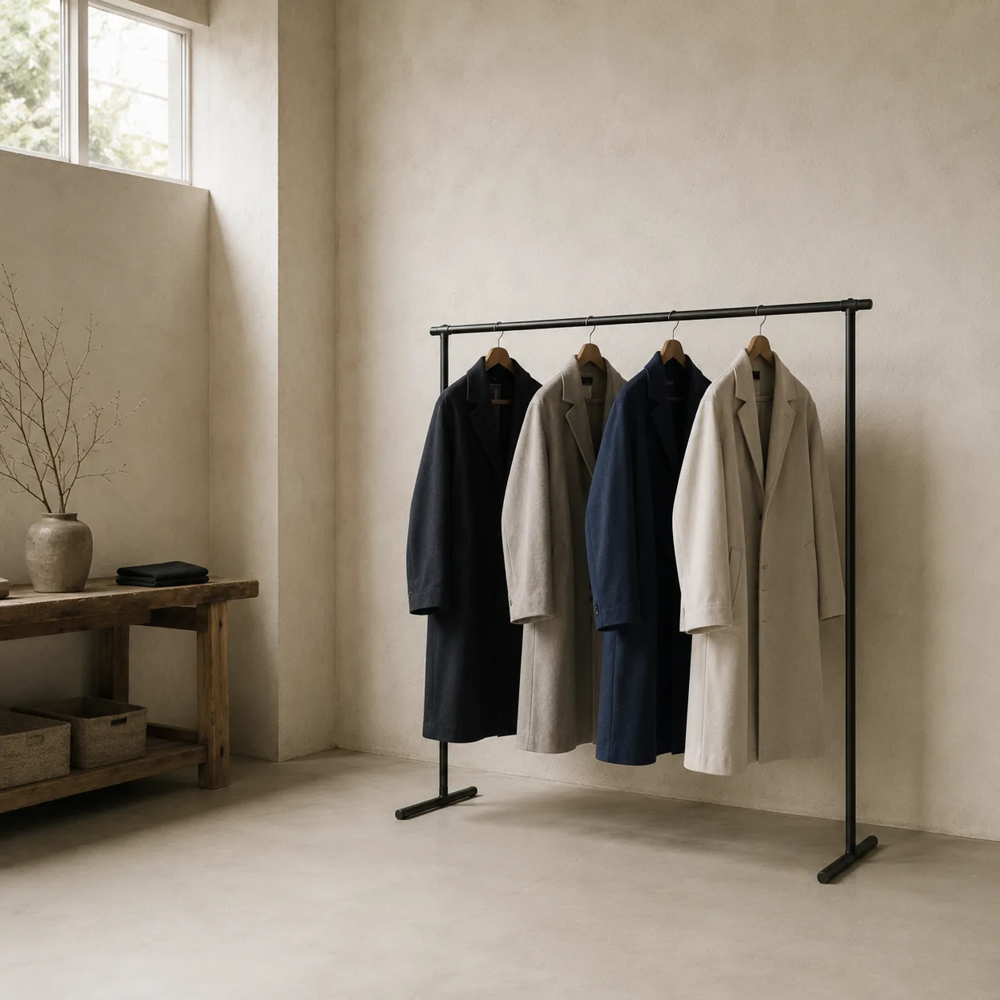
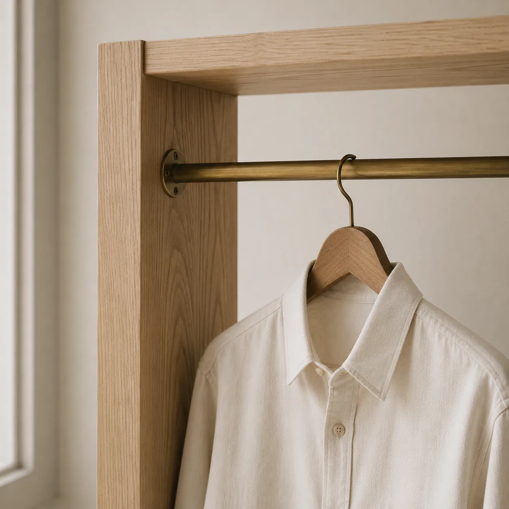
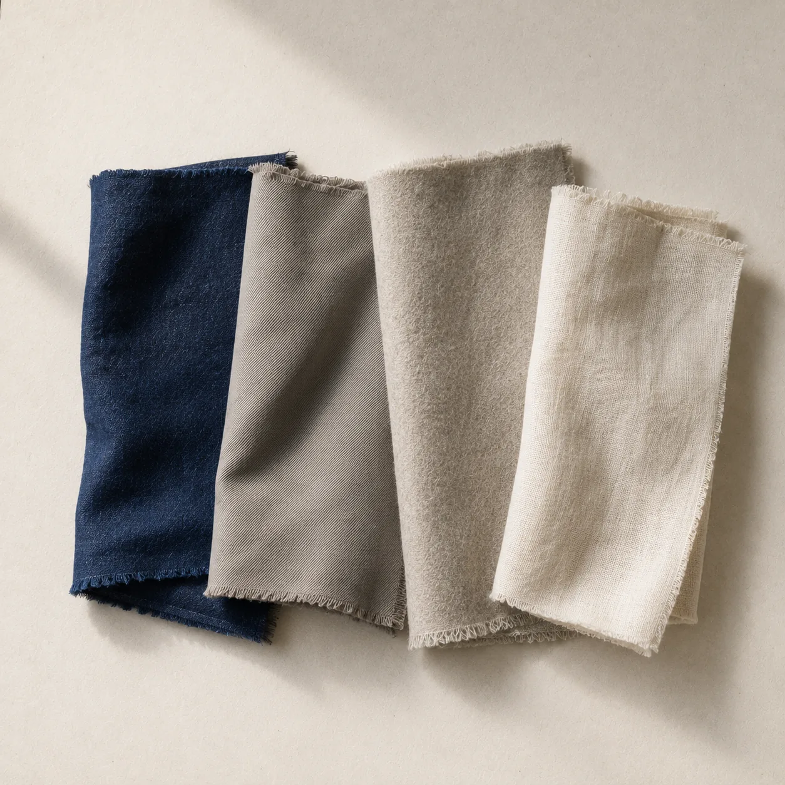

No.01
TWIN FLAP CITY BAG
¥18,600 tax in
WOMEN — 2028 AUTUMN & WINTER
一枚で完結させないこと。それが今季ウィメンズの出発点でした。コート、ニット、そして手に持つもの。三つの層が重なったときにだけ生まれる奥行きを、
色を足さずに作っています。


LOOK 01
CLASSIC TRENCH COAT <GRAY>
TWO-TONE SLIM TOTE BAG
肩の力を抜いたギャバジンに、藍のニットを。
足元まで一色でつながるように選んでいます。
LOOK 01
CLASSIC TRENCH COAT <GRAY>
TWO-TONE SLIM TOTE BAG
写真は 2028 Autumn & Winter のルック1点を、三層に重ねて表示しています。
この装いの商品を見るコートを主役に据えた秋冬です。
重ねても軽い生地だけを選びました。
二〇二八
01
起毛を抑えたウールと、薄く織ったギャバジン。三枚重ねても肩が落ちない重さに収まるところまで、生地の目付を落としました。
02
生成り、灰、藍。今季の配色はこの三色から動かしていません。重ねる順番を変えるだけで表情が変わるように組み立てています。
03
返し縫いと補強布は、外から見えないところにだけ足しています。ボタンは付け替えができるよう、糸足を長めに取りました。
コート4型、バッグ6型。BLUE WOODS No.1 POP-UP SHOP では、この10型すべてを実際に手に取っていただけます。価格はすべて税込です。
No.01
¥18,600 tax in

No.02
¥12,900 tax in

No.03
¥27,400 tax in

No.04
¥16,800 tax in

No.05
¥24,700 tax in

No.06
¥29,300 tax in

No.07
¥22,800 tax in

No.08
¥11,600 tax in

No.09
¥19,200 tax in

No.10
¥14,500 tax in
SIZE & FABRIC
コートは S / M / L の3サイズ。すべて同じ型紙から起こし、肩幅と着丈だけを変えています。生地見本は会場にご用意しています。
REPAIR
丈詰めは会期中であれば当日仕上げ、そのほかのお直しは10日前後をいただきます。ボタンの付け替えと裏地の交換は、購入後も承ります。



STYLING 01
同じ明るさの灰と生成りを隣り合わせると、境目が消えて身体の線だけが残ります。トレンチのベルトは締めきらず、結び目を前で少し落とすくらいが、この配色にはちょうどよい。
足元は色を足さずに、コートと同じ灰で受けています。
STYLING 02
朝に着た形が夕方まで残るかどうかは、生地の重さではなく織りの詰まり方で決まります。藍のラップコートは、あえて目を詰めて織った糸を使いました。歩いても裾が跳ねず、座っても膝の位置に皺が寄りません。
肩からかけたバッグは、コートの上から下げても肩線を潰さない幅にしています。


スタイリングの写真は、同じ日に撮った三枚を重ねて表示しています。
会場をつくる二週間のあいだに撮りためた記録から、四つ。什器のこと、生地のこと、名前を刷らない札のこと。

会場
床に置く物を減らすほど、服の色がよく見えます。搬入の初日はラックを一本だけ立てて、そこから何を足すかを二日かけて決めました。結局、足したのは椅子が二脚と鏡が一枚だけです。
続きを読む
什器
会期が終わったあとも店で使えるように、什器は塗装をせずに組んでいます。真鍮は手で触れた場所から色が変わっていくので、八日間でどこまで変わるかを見るのも楽しみのひとつです。
続きを読む
素材
今季使った生地は四種類だけです。並べてみると、織り方も目付も違うのに、光の返し方だけがよく似ていることがわかります。会場では実際に触れられるよう、同じ四枚を置いています。
続きを読む下げ札
下げ札には何も刷っていません。値段も品番も、その場でお伝えすればよいと考えたからです。外したあとに紙として残るくらいがちょうどよく、栞にして使ってくださるお客さまもいます。
続きを読むPOP-UP SHOP
今季のウィメンズ10型を、はじめてまとめてご覧いただける八日間です。コートは全サイズを会場に用意し、丈詰めはその場で承ります。
什器も照明も、この会期のために組んだものです。服より先に、まず部屋を見ていただけたら。
お問い合わせ ／ 0120-123-456 ／ info@example.com